Cómo Funciona
El sensor de contaminación "Naturbana Particulas", tiene un funcionamiento sencillo.
El microcontrolador, que funciona como un pequeño ordenador, se encarga cada 145 segundos recabar la información de los diferentes sensores,
procesarla y enviarla a través de internet a las diferentes plataformas de seguimiento de esta información.
Luego conectándonos a esas plataformas podemos hacer seguimiento de los datos recabados tanto de los valores en bruto como en forma de gráficos.
Partes
El sensor de calidad del aire Naturbana Partículas, está formado por 4 módulos:
-
Fuentes de Alimentación
-
Sensor de temperatura, humedad y presión atmosférica
BME280. -
Sensor de partículas en suspensión
SDS011 -
Microcontrolador
NodeMCU v3
Vamos a conocer un poco mas sobre cada uno de ellos.
Fuente de alimentación
La fuente de alimentación se encarga de proporcionar al resto de elementos la energía necesaria para funcionar. Para este proyecto usaremos como fuente de alimentación un cargador USB de los que se usan para los teléfonos móviles.
PONER FOTO
Sensor de temperatura, humedad y presión atmosférica BME280
Este pequeño sensor integra 3 componentes y es capaz de medir la temperatura, la humedad relativa del aire y la presión atmosférica.
PONER FORO 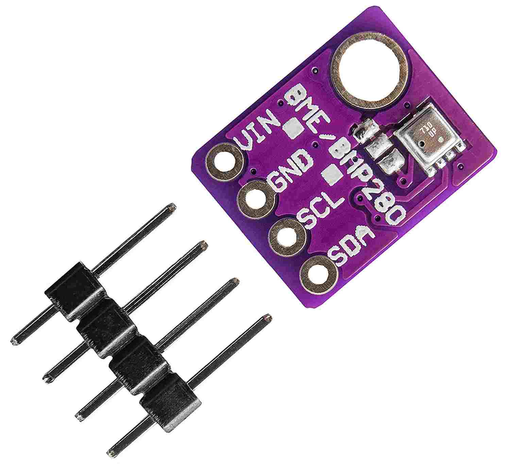
Sensor de partículas en suspensión SDS011
El Sensor SDS011 funciona haciendo circular el aire a través de un sensor laser y midiendo las desviaciones del laser debidas a las partículas en suspension. Es capaz de medir tanto partículas de 2.5µm como de 10µm que son unos de los principales contaminantes del aire.
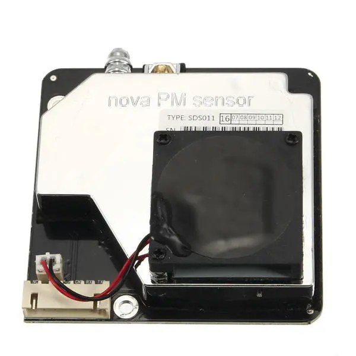 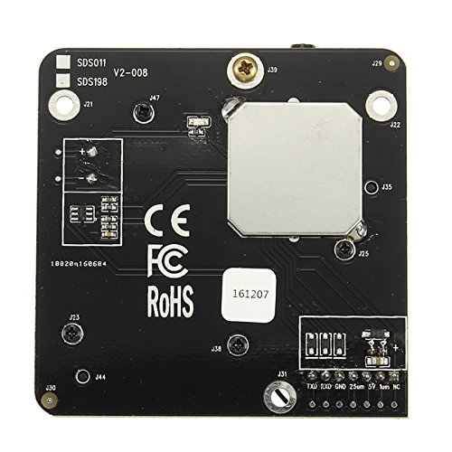
Microcontrolador NodeMCU v3
El microcontrolador NodeMCU v3, es el encargado de leer los datos de los sensores y enviarlos por internet a los servidores donde poder almacenarlos y asi poder analizarlos. Funciona a 80Mhz, tiene 4Mb de memoria, y es capaz de conectarse a redes wifi.
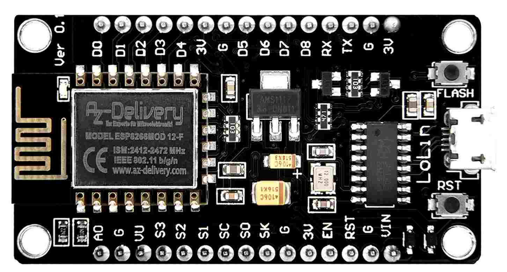

Construcción
Partes
-
Microcontrolador NodeMCU v3
-
Sensor de partículas en suspensión SDS011
-
Sensor de temperatura, humedad y presión atmosférica BME280
-
Fuente de alimentación
-
Cable USB plano
-
Cables dupont
-
20 cm de Manguera de 6mm
-
2 codos de tubería de 90mm de diámetro
-
Cinta de doble cara
-
Cinta transparente de embalar
-
Bridas plásticas
PONER FOTO DE TODOS LOS COMPONENTES JUNTOS
Ensamblaje
Conectar los componentes
| Para conectar los componentes es importante que el microcontrolador no esté conectado a la fuente de alimentación. |
Todos los componentes tienen unos pinchitos metálicos llamados pines que se usan para conectarlos con otros componentes usando cables dupont.
Estos pines vienen con un código de 2 o 3 letras escrito a su lado que indica su función.
Conectar Sensor de temperatura, humedad y presión atmosférica BME280
Separamos de la tira de cables dupont un grupo de 4 cables y fijándonos en los nombres de los pines, conectamos el sensor al microcontrolador de la siguiente forma:
| Sensor BME280 | Microcontrolador NodeMCU |
|---|---|
|
|
|
|
|
|
|
|
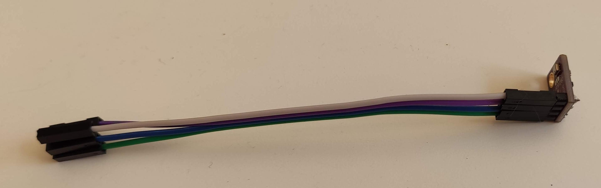 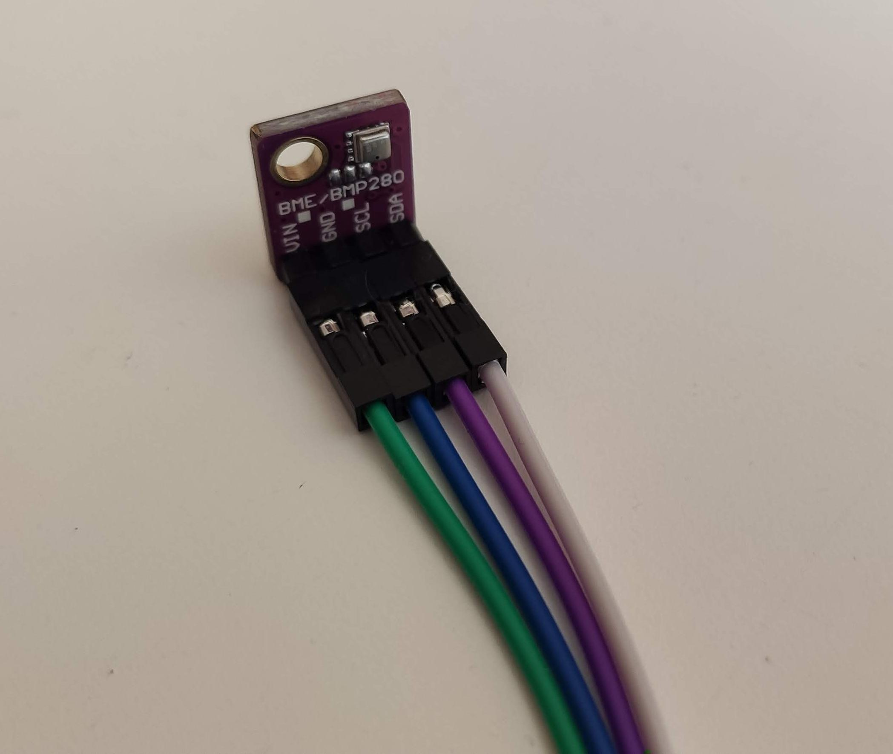 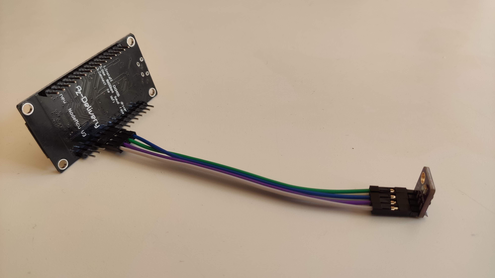
Conectar el Sensor de partículas en suspensión SDS011
De forma similar al paso anterior, separamos un grupo de 4 cables y fijándonos en los nombres de los pines, conectamos el sensor de partículas al microcontrolador de la siguiente forma:
| Sensor SDS011 | Microcontrolador NodeMCU |
|---|---|
|
|
|
|
|
|
|
|
El resto de pines del sensor de partículas no se usan.
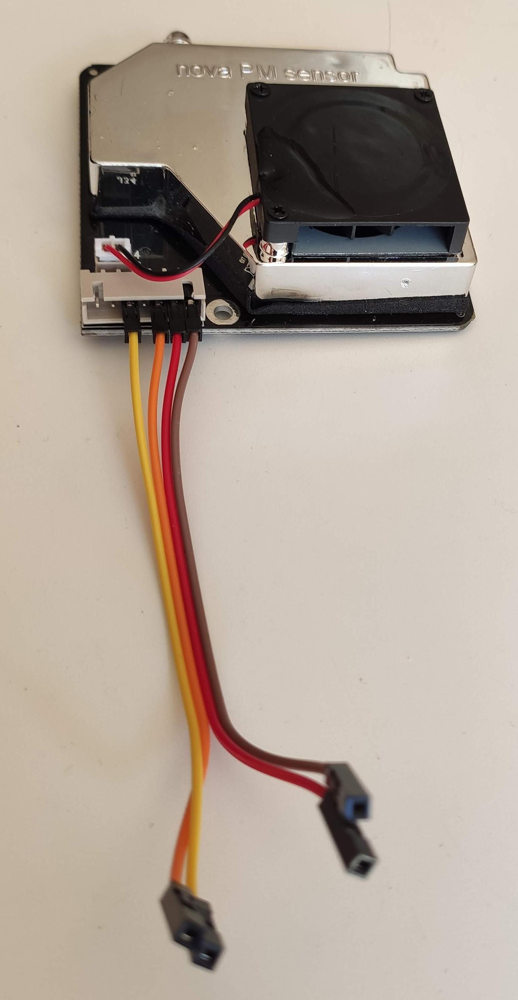 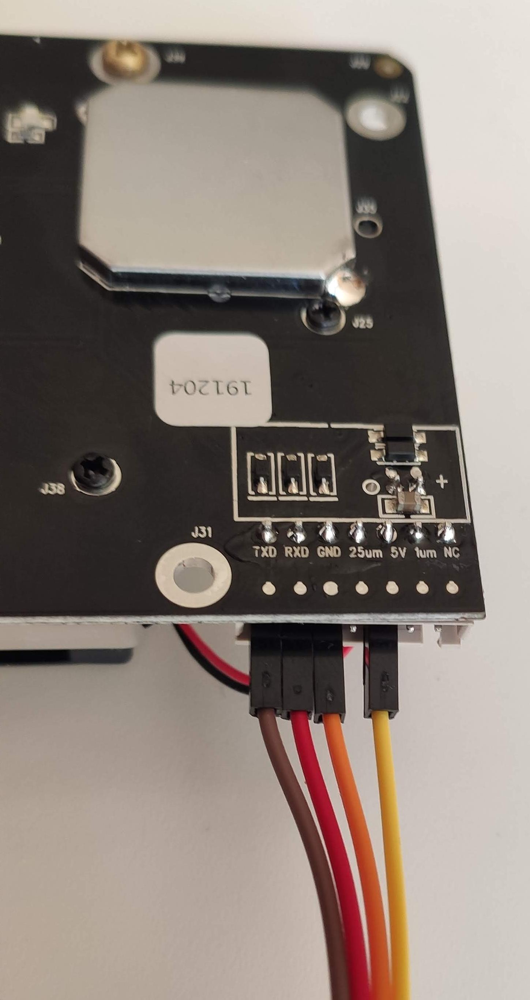
Comprobación de las conexiones
| Es muy importante revisar que las conexiones que hemos hecho son correctas y que cada cable une los pines indicados. Asi que revisa una vez mas las conexiones antes de encender el equipo por primera vez, sino corres el riesgo de que algún componente pueda estropearse. |
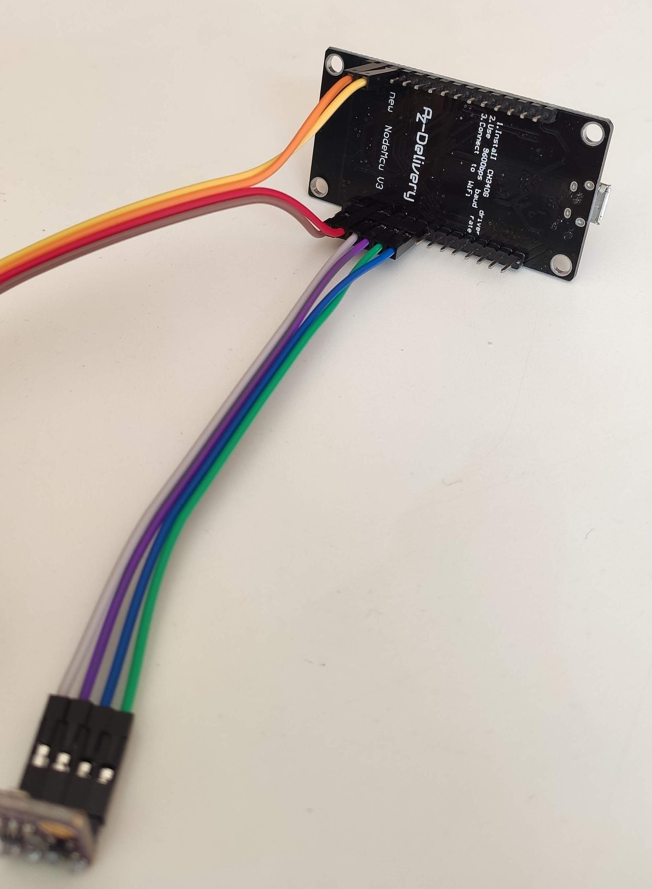 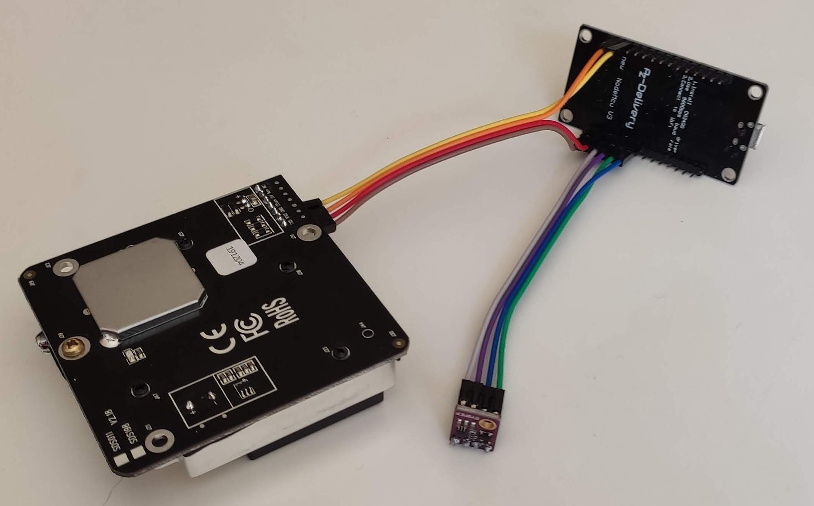
Una vez hayamos revisado las conexiones vamos a poner en marcha el dispositivo por primera vez para ver si es capaz de leer los valores de los sensores.
Para ello vamos a seguir los siguientes pasos:
-
Enchufamos el cable usb en el Microcontrolador, luego en al fuente de alimentación, y por ultimo en chufamos la fuente de alimentación en un enchufe de la pared.
-
Esperamos 20 segundos.
-
Con un ordenador o teléfono buscamos un ref wifi que se llame "Naturbana-xxxxxx" (siendo xxxxxx dígitos), nos conectamos a ella.
-
Abrimos el navegador (Chrome, Firefox, etc) y en la barra de direcciones ponemos http://192.168.4.1/ para acceder al menú de configuración de nuestro sensor de calidad del aire.
-
Si pulsamos en "Datos actuales" veremos un texto indicando cuanto tiempo falta para la primera lectura de datos ("Otros XX segundos a la primera medición"), podemos ir pulsando en el botón "refrescar" de nuestro navegador hasta que ese tiempo llegue a
0y se produzca la primera lectura. -
Si todo ha ido bien deberíamos ver una tabla similar a esta:
| Sensor | Parámetro | Valor |
|---|---|---|
|
PM2.5 |
|
|
PM10 |
|
|
Temperatura |
|
|
Presión atmosférica |
|
|
Humedad |
|
|
Intensidad de Señal |
|
|
Calidad de Señal |
|
Cada 145 segundos nuestro sensor realizara una nueva medición.
Si no aparecen valores en la tabla, debemos apagar el microcontrolador y revisar una a una las conexiones comprobando si los cables conectan los pines indicados en los pasos anteriores.
Configuración
Una vez hayamos comprobado que todo funciona correctamente podemos proceder a configurar la conexión a internet de nuestro sensor.
Para que nuestro sensor pueda enviar a las distintas plataformas de medición, los datos que obtiene, necesitamos que tenga conexión a internet, para ello, mientras seguimos conectados al menú de configuración de nuestro sensor de calidad del aire, pulsamos el botón "Volver al inicio" y luego "Configuración".
Vemos que arriba a la izquierda, al lado del icono de la nube, aparece un número al lado del texto "ID:", apuntad ese numero porque lo necesitaremos mas adelante.
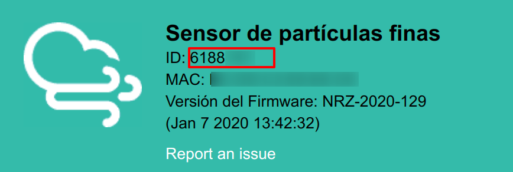
En la sección "Configuración WiFi" ponemos el nombre la red WiFi y la contraseña. No modificamos ningún otro valor y pulsamos el botón "Guardar y reiniciar".
El microcontrolador se reiniciará y, si hemos configurado el wifi correctamente, empezará a hacer mediciones, que una vez hayamos registrado el sensor (ver paso siguiente), podremos consultar en el mapa de Sensor Community (los datos tardan unos 5 minutos aproximadamente en aparecer en el mapa).
Registro
Nuestro sensor va a enviar información sobre las partículas en suspension, la temperatura, la humedad y la presión atmosférica a varios servicios, gestionados por asociaciones sin ánimo de lucro, que intentan hacer esta información mas transparente en base a usuarios como vosotros que la comparten. Estos servicios son:
Tenemos que registrar nuestro sensor en cada uno de estos servicios.
Registro en Sensor.Community
Sensor.Community -antes llamada luftdaten.info- es un proyecto creado por OK Lab Stuttgart para promover el desarrollo transparente, los datos abiertos y la ciencia ciudadana.
Para registrar nuestro sensor primero tenemos que registrar una cuenta en este sencillo formulario: https://my.luftdaten.info/register Una vez hayamos verificado la cuenta con el email que nos envían tenemos que acceder a través de https://my.luftdaten.info/login. Allí pulsamos en "Register new sensor" y vamos rellenando el formulario como se indica a continuación:
Sensor registration
-
Sensor ID: es el numero que apuntamos en el paso "Configuración" -
Sensor Board: Es el tipo de microcontrolador que estamos usando en nuestro caso un "esp8266"
Basic Information
-
Personal sensor name: el nombre que queramos darle al sensor, por ejemplo "Ventana primer piso" o "Instituto Santamarca". -
Street: Nombre de la calle donde está ubicado el sensor. -
Street number: Número de la calle donde va a estar ubicado el sensor. -
Indoor Sensor: si el sensor va a estar ubicado en el interior, marcamos esta opción, si va a estar en el exterior la dejamos sin marcar. -
Postal code: Código postal donde va a estar ubicado el sensor. -
City: Ciudad donde va a estar ubicado el sensor. -
Country: País donde va a estar ubicado el sensor.
Additional Information
-
Sensor level above ground (in cm): Altura en centímetros desde la calle (no altura sobre el nivel del mar) -
Sensor location relative to the traffic: indicamos como de lejos estamos del tráfico de coches: siendo 1 = en un jardín protegido del tráfico, y 10 = en el muro que da directamente a la calle. -
Short description of location: Descripción del lugar, por ejemplo "En el patio de primaria".
Hardware configuration Aquí tenemos que configurar los 2 sensores incluidos en nuestro equipo.
En la primera linea:
-
Sensor Type: tipo de sensor para medir partículas, en nuestro caso usamos un "SDS011". -
Pin: 1
En la segunda linea:
-
Sensor Type: tipo de sensor para medir temperatura y humedad, en nuestro caso usamos un "BME280". -
Pin: 11
Mapa Aquí hay que poner las coordenadas (latitud y longitud) donde se encuentra el sensor, si pulsamos en "Lookup entered address", automáticamente se rellenaran basadas en la dirección que pusimos mas arriba.
Por último pulsamos "Save settings" para guardar toda la información que hemos metido.
A partir de este momento nuestro sensor ha quedado registrado en Sensor.Community y aparecerá en los mapas con su información actualizada.
Registro en Naturbana
TBD
Caja de protección
Para poder poner nuestro sensor de calidad del aire en el exterior deberemos protegerlo y así evitar que las partes eléctricas puedan estropearse por la lluvia o el sol.
Para ello vamos a meterlo en un caja construida con 2 codos de tubería, siguiendo estos pasos:
-
Poner en el sensor de partículas el tubo transparente de 6mm.
-
Usando una brida plástica, Unir el sensor de partículas y el microcontrolador pasando la brida por el orificio del sensor que está mar cercano a los pines y por el orificio del microcontrolador mas cercano al puerto usb como se ve en la foto: PONER FOTO
-
Desconectar el cable usb de la fuente de alimentación y conectarlo al microcontrolador.
-
Introducir el conjunto y fijarlo al interior de la tubería usando cinta doble cara.
-
Asegurarse que el tubo transparente asoma por una de las aberturas de la caja y que el sensor de temperatura esta cerca de la salida, pero no asoma de la otra abertura. El cable usb debe salir por una de los extremos.
-
Sellar las 2 tubería usando 2 o 3 vueltas de la cinta de embalar.
-
Fijar todo el conjunto en el exterior en alguna ventana o balcón que este cerca de un enchufe para poder conectar en el cable usb a la fuente de alimentación y esta al enchufe.
PONER FOTOS
Solucionar problemas
-
No encuentro ninguna señal wifi que se llame "Naturbana-xxxxxx"
-
Asegurate que el microcontrolador esta bien enchufado a la fuente de alimentación y esta a su vez enchufada.
-
-
No me aparecen los datos de los sensores en la página "Datos actuales"
-
Revisa con calma las conexiones de los sensores, si siguen sin aparece prueba a cambiar los cables dupont por unos nuevos.
-
-
Ya han pasado mas de 5 minutos desde que configuré los datos de WiFi y no aparece información en el Mapa.
-
Mira si ves la señal WiFi "Naturbana-xxxxxx", si es así, es porque el microcontrolador no ha podido conectarse a la red WiFi, revisa bien el nombre y la contraseña de la red WiFi.
-
Si sigue sin funcionar prueba instalar el sensor en otro lugar con mejor cobertura WiFi.
-
Colocación
El sensor debemos conectar en un lugar que cumpla los siguientes requisitos:
-
Estar en el exterior
-
Tener un enchufe cercano para poder enchufarlo
-
Tener una cobertura WiFi aceptable
El sitio mas típico es en una ventana que tenga rejas, ya que podemos usar las bridas incluidas para anclarlo a las rejas.
Cómo consultar las mediciones
Ahora que ya tenemos nuestro sensor de partículas funcionando vamos a ver como acceder a los datos que está recogiendo.
Desde Sensor.Community
La web de Sensor.Community nos permite ver los datos en el Mapa, y en la session My Sensors de nuestro area personal.
Ademas nos podemos descargar esa información en formato csv desde la dirección https://archive.luftdaten.info/YYYY-MM-DD/YYYY-MM-DD_{modelo_de_sensor}_sensor_{id_del_sensor}.csv
Desde Naturbana
TBD
Preguntas frecuentes
TBD